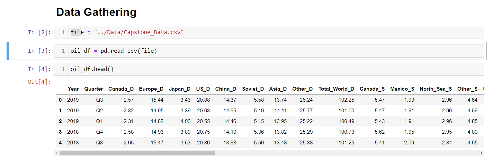
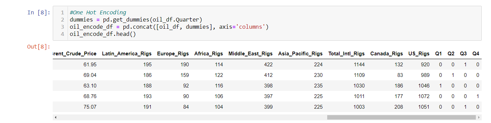
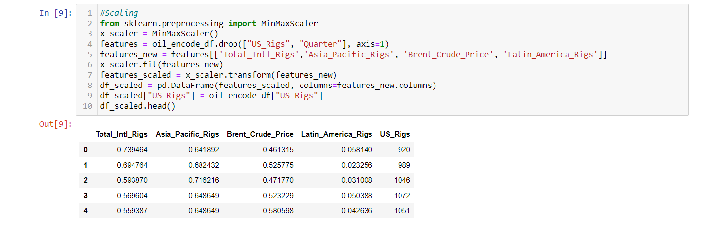
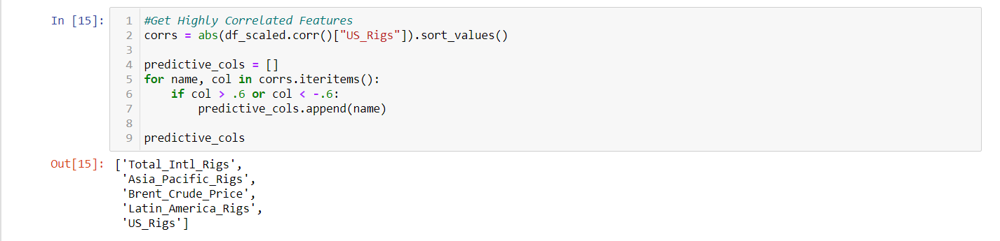
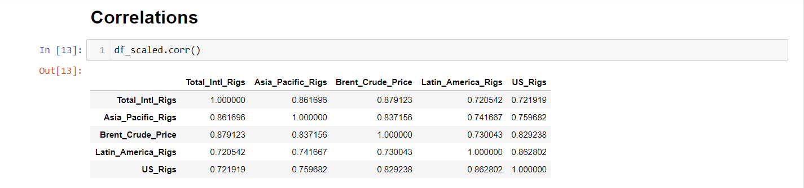
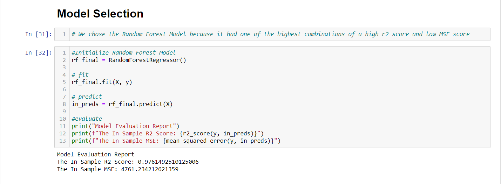

 In choosing to analyze the US Rig Count, we quickly realized that it would be hard to find a single dataset that would provide enough relevant information for such a grand task. To combat this problem, we decided to combine 3 different csv files, 2 from kaggle and 1 provided by Baker Hughes. The 3 different sets of information we gathered were oil supply/demand data, brent crude price, and rig count.
One of the issues we ran into with having 3 different data sources is that not all the data was provided with the same time intervals. To combat this, we used pivot charts and different microsoft excel skills to aggregate the data into the largest common time interval, quarter year. While this reduced the total number of rows of data, we still feel that there is enough data for our machine learning algorithms to accurately predict our target. From there, we combiend the data into a single csv file, and then read it into a pandas dataframe using the Jupyter Notebook software. Let the fun begin!

As stated above, we now had all of our data broken down by quarter. In prepping our data for machine learning, we learned that our quarter column was actually a string. For example, instead of quarter 1 being displayed simply as integer "1", it was "Q1". Due to this it became necessary to encode the data using either label encoding or one-hot-encoding. To ensure that our machine learning algorithims would not erroneously assign more values to quarters 3 and 4 over quarters 1 and 2, we used we used pandas get_dummies method to one-hot-encode the quarter data.

To explore our data, we created histograms of each of our columns and found that while some features displayed normal distributions, there were quite a bit that were either left or right skewed. We used sklearn's MinMaxScaler import to scale our data for this issue.

Due to our desire to create a more usable model for the end user, we wanted to try and eliminate some of the columns that appeared to be less highly correlated with our US Rig Count target. Through trial and error, we landed on a correlation benchmark of .6, both positive and negative. Creating feature columns with a correlation of .6 or higher, we narroed our feature columns to 'Total Intl. Rigs', 'Asia Pacific Rigs', 'Brent Crude Price', and 'Latin America Rigs'.

Using our new feature columns, we ran a correlation table to further inspect the figures and ensure that we were on the right track.
As we were looking to predict continuous values, we ran various machine learning regression models in order to find the model that produced the highest correlation and lowest error estimator combination. In order to evaluate correlation, we used the r-squared metric. To evaluate error, we used the Mean Squared Error metric. After splitting the data into training and testing data, we ran both sets of data through the linear regression, ridge, lasso, ElasticNet, decision tree, random forest, AdaBoost, GradientBoost, KNN, and SVN models.
The best linear regression model that we came across was the ridge model. The ridge model actually performed better on the testing data then the training data with a r-squared correlation of .87 and a mean squared error of 29220 when applied to the testing data, and a .81 r-squared correlation and mean squared error value of 36590 when applied to the training data.
The best tree model, and ultimately the best model overall, proved to be the random forest model. Although it seemed that the model was overfitting the training data with a r-squared correlation value of .97 and a mean squared error of just 74, the random forest actually proved to be quite predictive for the testing data as well. Ultimately, with a r-squared correlation value of .89 and a mean squared error of 25225, the random forest model was the model we decided to choose to conduct our final analysis.
 Upon deciding on the random forest model, our last step in the model building process was to fully fit the data to the model and run the algorithm. We were happily surprised to see a high r-squared correlation of .98 and a relatively low mean squared error figure of 4761.
Because data analysis is only as good as its ability to produce actionable intelligence, our work was not over. Paramount to the machine learning process is ensuring that the end user is able to successfully use the model him or herself. In order to ensure this, we tested some of our deployment code to guarantee it passed the common sense test.
In our initial test, we found that we had to input scaled data into the model in order for it to produce a common sense output. We remembered that this was due to us scaling the data in the first place.
Because of this, we realized we would have to programatically transform the user input using the same scaler we used in our code before we entered the users input into our model.